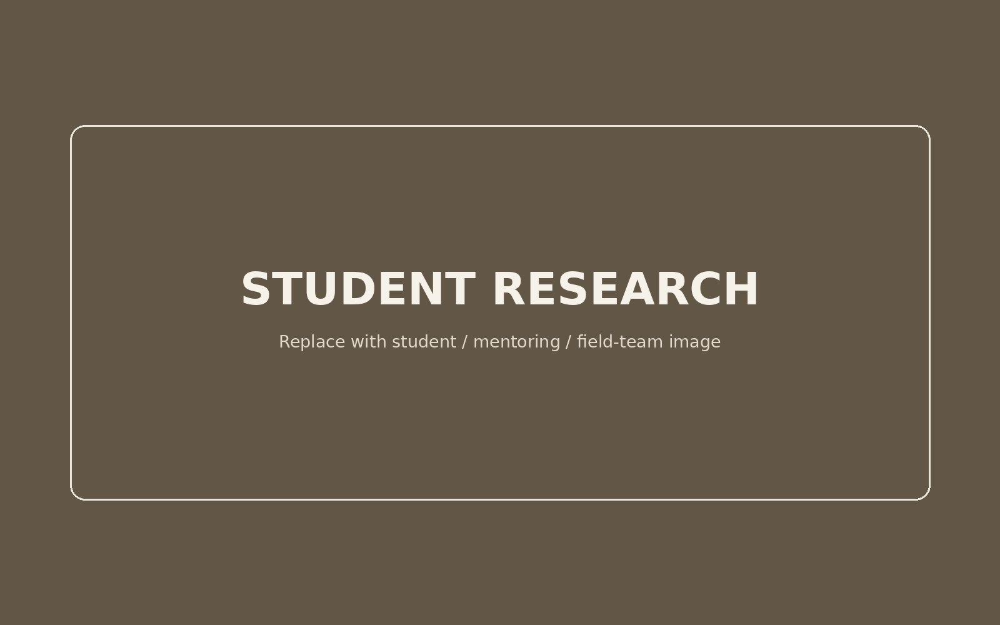
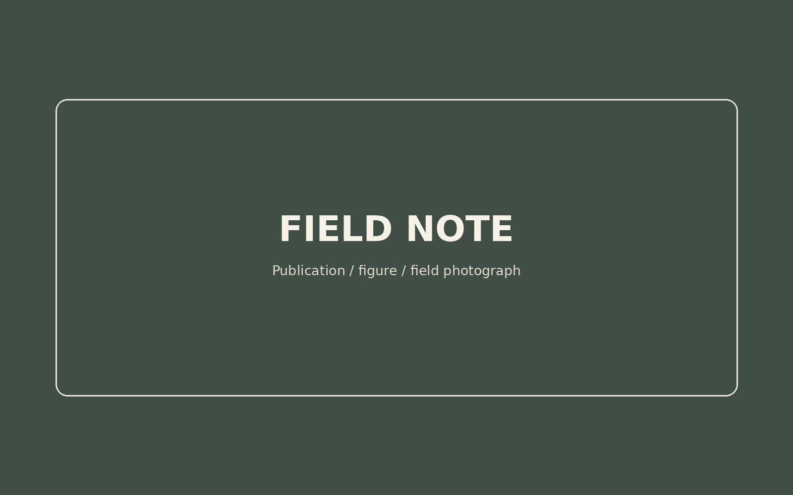
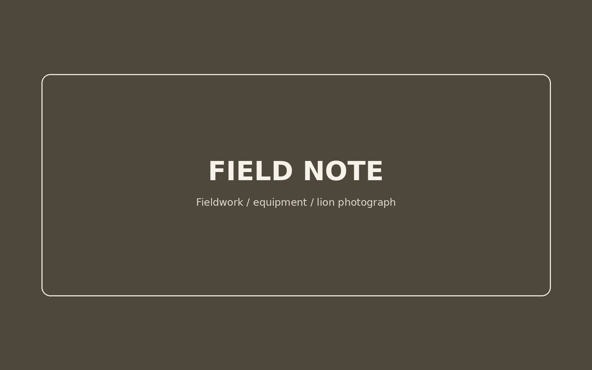
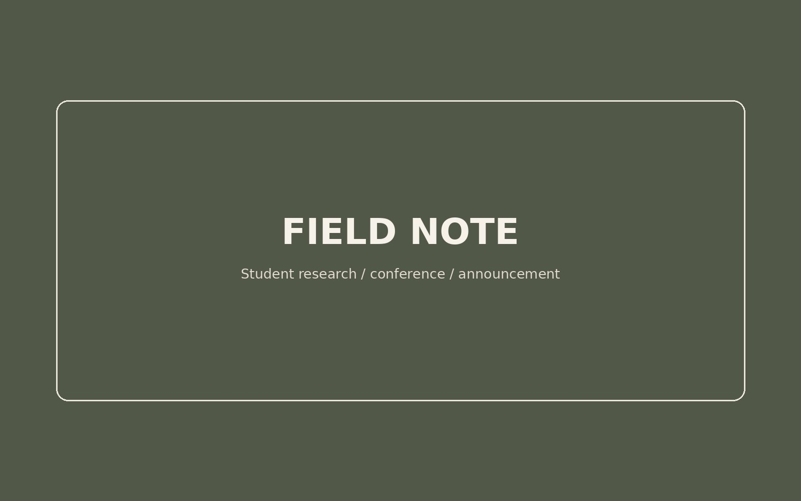

Namibia
Mountainous, semi-arid, low density
Lions occupy a resource-limited landscape shared extensively with people and livestock.

Behavioral Ecologist · Wildlife Ecologist
Behavioral ecology across changing environments
My research examines sociality, collective behavior, and sensory ecology, with African lions as my primary comparative system. A major part of my current work is conducted through a comparative lion research programme that I co-lead with Genevieve E. Finerty.
Max Planck Institute of Animal Behavior · University of Konstanz · University of Minnesota Lion Center
Collaborative comparative lion research
A major part of my current research is conducted through a comparative African lion programme that I co-lead with Genevieve E. Finerty. Across three contrasting populations, we use whole-group biologging and complementary field methods to investigate how ecological conditions shape social behavior.
Programme co-PIs: Natalia Borrego & Genevieve E. Finerty
Namibia
Lions occupy a resource-limited landscape shared extensively with people and livestock.

Botswana
A pan-structured landscape where whole-group biologging is paired with long-term field collaboration and San tracking expertise.

Zimbabwe
A contrasting system in which the study population is spatially removed from the immediate human-use boundary.
Collaborative research questions
Across our jointly led grants and collaborative publications, we ask three linked questions about how ecological conditions shape animal social behavior.
We ask how ecological conditions change the costs and benefits of cooperation, collective action, territoriality, and other social strategies.
We examine how association, cohesion, and collective behavior change as ecological and social conditions alter opportunities for individuals to interact.
We investigate the sensory, cognitive, physiological, and behavioral mechanisms that allow individuals to respond flexibly to changing ecological and social environments.

Field science
My work combines natural-history observation with tools that capture movement, interaction and sensory information across scales.

Teaching & mentoring
Students enter the research process by learning how to interrogate existing data, develop tractable questions, test alternative explanations and communicate what they discover.
Research in motion
Short updates from the field, new papers, student research and ongoing collaborations.

Our new work asks what behavioral biology looks like when we compare the same species across ecological contexts rather than relying on a handful of intensively studied populations.
Read more →
Comparing vocal behavior across populations opens a new route to understanding how communication changes with density, ranging patterns and ecological conditions.
Read more →
Student-led research is helping us test how fine-scale environmental structure changes the strategies lions use while hunting.
Read more →Selected scholarship
The full site will include selected papers with short explanations of their biological significance, a complete publication list, and science communication and media work.
Curriculum vitae
We will add a downloadable public CV here after the site structure is finalized.